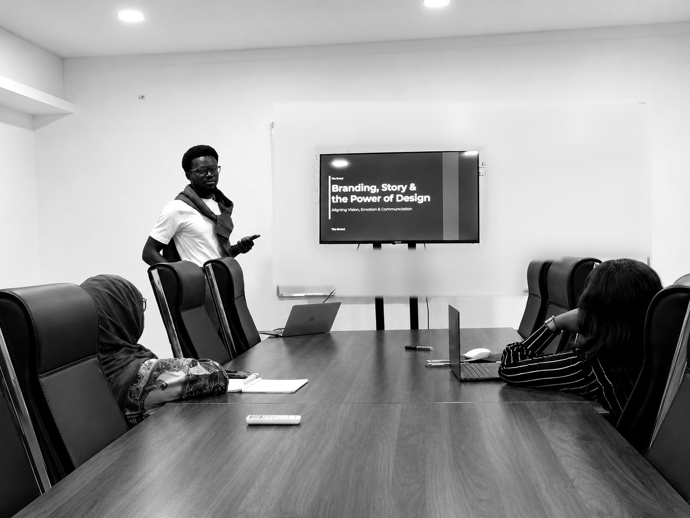

Work With Ezra · AI Ethics and Workflow
AI, adoptedwith integrity.
Most teams already use AI. Few have agreed how. Ezra helps organisations set the rules, redesign the work and train their people, so AI saves real hours and protects data, clients and reputation along the way.
Why this matters now
Your team
uses AI today.
People paste client notes into chatbots, draft proposals with AI and publish content no one checked. Most of it happens quietly, one person at a time.
That carries real exposure. Confidential data can leave the building, a biased output can reach a customer and a fabricated fact can end up in a board paper. Banning the tools only pushes the habit out of sight.
The answer is a clear set of rules your people understand, workflows that put AI where it helps and a habit of human sign-off before anything goes out. Ezra brings a first-class Cybersecurity background and training in AI and Media from Oxford's Saïd Business School to that work.
What you get
Four pieces
of work.
Take them as one programme or start with the piece you need most. Each one ends with something your team can use the same week.
AI readiness review
Interviews and a short survey map where your team uses AI today, which tools they rely on and where the risks sit. You get a written report ranked by risk and by the time AI could save.
Responsible-use policy
A plain-language policy that covers data, disclosure, bias, accuracy and accountability. It names the approved tools and says what can and cannot go into them, written so staff read it and follow it.
Workflow redesign
Ezra rebuilds two or three of your heaviest workflows, such as proposals, reporting or content, with AI at the steps where it helps and a named person signing off at the end.
Team training
Hands-on sessions where your people practise prompting, fact-checking and safe handling of data on their own real tasks. Everyone leaves with a one-page guide to keep beside the keyboard.
The principles behind it
Fast tools,
human judgment.
Every policy and workflow Ezra builds rests on four commitments. He holds his own work to the same standard.
Disclosure
People know where AI touched the work and where it did not.
Confidentiality
Sensitive data stays out of AI tools unless the owner agrees to it.
Human sign-off
A named person reviews every output before it reaches a client or the public.
Fair and local
Outputs get checked for bias and for the context of the people they serve.
How it runs
One programme,
four stages.
The timeline depends on the size of your team and the pieces you choose, and it is fixed in the proposal. Training on its own can happen within a week.
Listen
Discovery call, interviews with team leads and a short staff survey on current AI use.
Write the rules
Readiness report and a draft policy, reviewed with your leadership before anything is final.
Rebuild the work
Two or three workflows redesigned and tested with the people who run them every day.
Train and hand over
Team training, a one-page guide and a review date to check how the new habits are holding.

Who it suits
Leaders who want speed and trust.
- Consulting firms and agencies handling client data every day
- Banks, fintechs and telecoms with regulators watching
- Schools, NGOs and churches whose staff already use AI informally
- Founders who want AI in the business from day one, done properly
FAQ
Before you start
No. The work is about how people use AI tools that already exist, such as ChatGPT, Claude, Copilot and Gemini. Your IT lead joins the policy review, and nobody needs to write code.
That depends on your data, your budget and the work your team does. The readiness review compares the options against your needs, and the policy names the tools your organisation approves.
Yes. Many teams begin with a half-day training session and add the policy and workflow work once they see what their people need.
Pricing depends on team size and which pieces you choose. After a discovery call you get a written proposal with a fixed fee.
Yes, before any discovery work begins. Nothing you share goes into an AI tool without your written agreement.
Next step
Bring AI inproperly.
A Clarity Conversation is enough to see where your team stands and which piece of work to start with.